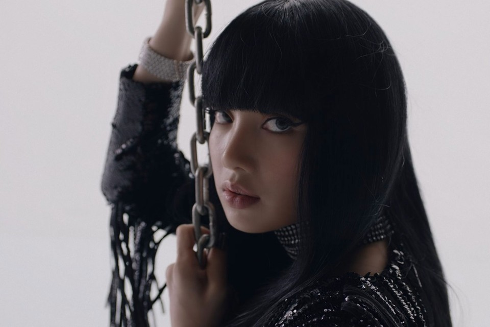
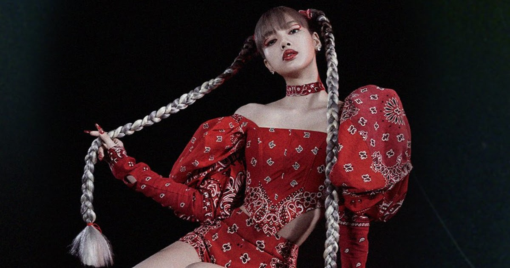

Pranpriya Manoban originally her birth name, yet she legally changed her first name to Lalisa. Thai is her ethnicity and nationality. The names of Lisa's biological parents have not been made public. Marco Bruschweiler, a famous Swiss chef who is currently stationed in Thailand, is her stepfather. Lisa completed her education at Praphamontree II School. Lisa used to be a model and dancer when she was little. When she was only 13 years old, she auditioned for the YG Entertainment Competition and was accepted. She won the competition and was offered the position of YG Entertainment trainee by Yang Hyun-suk, which Lisa accepted. Lisa moved to South Korea in 2011 to begin her formal training in performing for her five-year stay as a K-pop Idol. She was a member of the dance group We Zaa Cool at the time, along with fellow Thai K-pop Idol trainees Bambam and Ten. In 2016, she changed the stage name Lisa and joined the K-pop girl group Blackpink as the lead dancer, lead rapper, backing vocalist, and maknae (youngest member of a group) on August 8, 2016. Lisa is also the first non-Korean YG Entertainment artist and the first YG Entertainment artist from outside of Korea.

About
